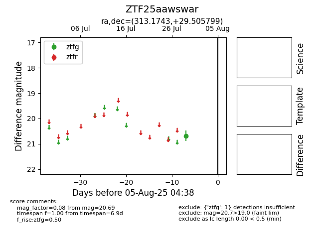

Target ZTF25aawswar at 2025-08-05 04:38, see:
FINK: fink-portal.org/ZTF25aawswar
Lasair: lasair-ztf.lsst.ac.uk/objects/ZTF25aawswar
ALeRCE: alerce.online/object/ZTF25aawswar
alt names
ZTF25aawswar (ztf,fink)
coordinates:
equatorial (ra, dec) = (313.1743,+29.50580)
galactic (l, b) = (73.2977,-9.57763)
photometry
last ztfg=20.69
1 ztfg detections
